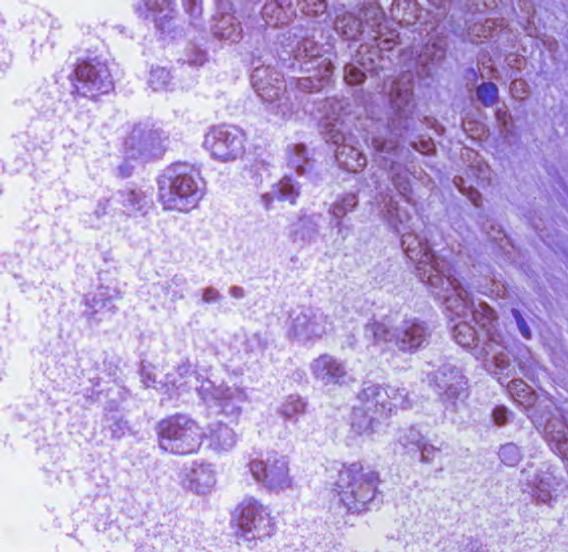
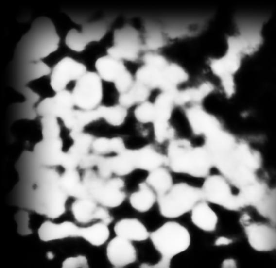
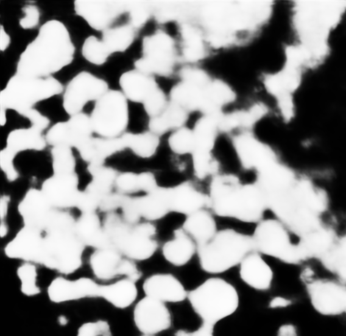
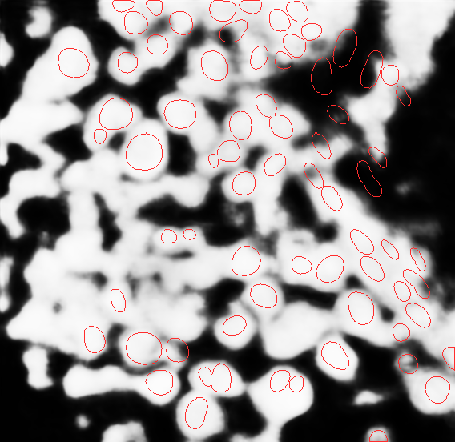
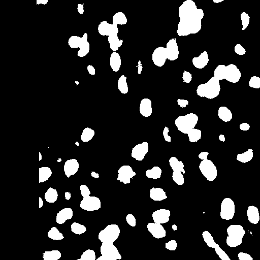
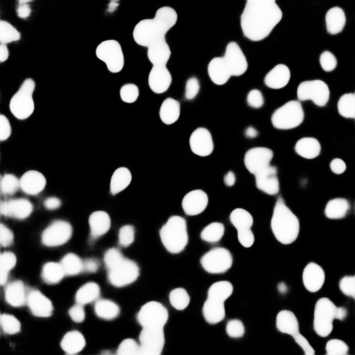
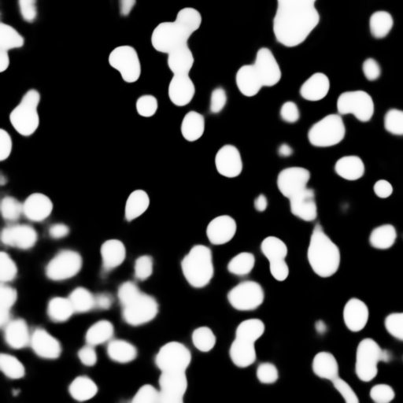
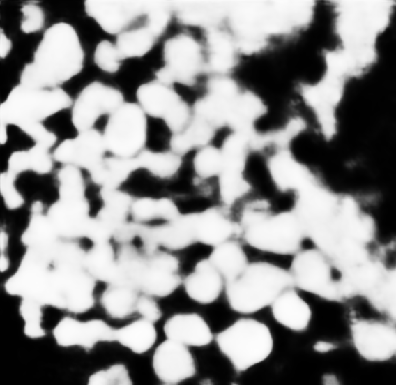
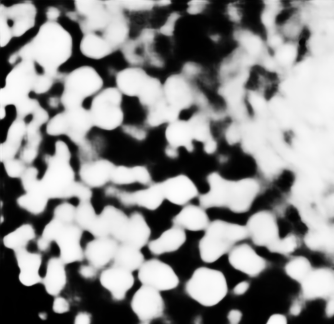
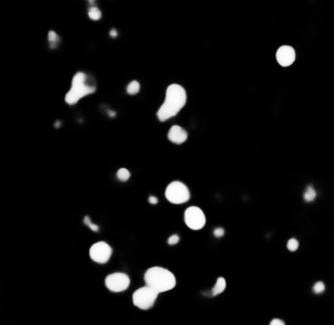

MoNuSAC: matched-tissue, patient-separated test
The original organizer archives supplied 120 eligible ROIs after a 512-pixel minimum-side gate and removal of any training patient found anywhere in the original test archive. Every test tissue occurs in training. The GigaTIME CNN was applied at its 0.25 µm/pixel model grid, and CellPhenotyper quantified 21 virtual markers over expert nuclear instances plus 21 over 3 µm nucleus-anchored cell proxies. One fastPLS 0.4 model was fitted on the 88 training ROIs, then evaluated once on all 32 held-out ROIs.
| Tissue | Training ROIs | Test ROIs | Test cells | Accuracy |
|---|---|---|---|---|
| Breast | 27 | 8 | 2,174 | 85.8% |
| Kidney | 15 | 10 | 3,841 | 84.6% |
| Lung | 27 | 4 | 1,177 | 95.8% |
| Prostate | 19 | 10 | 3,584 | 81.9% |
| Total | 88 | 32 | 10,776 | 85.2% |
Rare-class limitation. Epithelial recall is 94.3% (6,173/6,548) and lymphocyte recall is 71.9% (3,005/4,178); only 1/46 macrophages and 0/4 neutrophils were recovered. Macro F1 is 43.1%. The earlier top-decile enrichment screen missed major quality failures. The newer spatial QC flags all saved outputs; classification scores must be repeated after corrected GigaTIME inference passes the nuclear QC gate. Breast and lung test images lack some reference classes, so their four-class balanced accuracy is undefined rather than averaged over absent classes. These scores measure type prediction conditional on expert nuclei, not cell detection or measured-protein accuracy.
Inspect every held-out ROI — archived pre-fix outputs
These 32 test-set marker images were not regenerated after the overlap fix. Their visible dark border is a real artifact in the saved predictions. The corrected one-case MoNuSAC output below still fails nuclear QC, so none of these marker maps supports a validated cell-type result.
| Type in selected ROI | Scored cells | Recall |
|---|
All expert cells matched both quantification tables in this cohort. Both colored overlays use expert nuclear geometry, with a different predicted class only in the Tambua panel. Virtual DAPI, CK, CD3 and CD68 are uncalibrated model scores. The complete per-image counts and model score report are downloadable; the fitted fastPLS model and feature metadata are also provided. MoNuSAC imagery and the fitted model retain the organizer CC BY-NC-SA 4.0 terms.
Virtual DAPI quality: corrected one-case validation
On the MoNuSAC prostate ROI TCGA-G9-6356-01Z-00-DX1_6, CellPhenotyper resampled the 0.252 µm/pixel source to GigaTIME’s 0.25 µm/pixel grid, ran the pinned CNN, and independently detected 70 nuclei with StarDist. The overlap-denominator fix removed one numerical source of darkening, but visible spatial shading remains in this prediction. Virtual DAPI is diffuse and does not resolve nuclear contours. The production QC gate therefore rejects its marker output.




Quality result: fail. Nearby-nucleus AUC 0.668; prevalence-matched Dice 0.636; inside-minus-outside nuclear boundary contrast 0.016 against a provisional 0.05 gate. The edge-to-core nuclear DAPI ratio is 1.148; this global summary does not rule out local shading, as the image shows. These are technical morphology checks, not measured-DAPI validation. Download the native-store QC report.
Production-path paired reference control
A fixed held-out H&E patch from the authors’ paired release was processed through the current CellPhenotyper CNN and nuclear-QC code, rather than the earlier research runner. Its registered 556-pixel field represents 128 µm, resampled to the model’s 512-pixel grid at 0.25 µm/pixel. The pinned checkpoint and DAPI channel match the MoNuSAC run.




Paired control: pass. Full-image AUC is 0.861 against released nuclei and 0.901 against the released thresholded DAPI reference. The separate nearby-nucleus QC gives AUC 0.732, Dice 0.641, boundary contrast 0.073, and edge/core ratio 1.006. This confirms this implementation on one in-distribution patch; it does not validate the failed MoNuSAC transfer or other virtual markers. Data provenance and research-use terms · Native-store QC · full-image reference metrics.
Residual border test. A CPU replay of this paired patch added 128 pixels of reflected context around the source image before inference. It did not improve edge fidelity: AUC within the outer 24 model pixels fell from 0.855 to 0.838 against the released thresholded DAPI. We did not adopt that variant. The corrected MoNuSAC result still has visible spatial shading, so the numerical overlap fix must not be described as a complete shadow correction. Exact edge comparison.
Show the rejected reflected-context DAPI image

Paired-data control and stain-transfer diagnostic
The identical pinned CNN checkpoint reached mean nuclear AUC 0.920 on 45 held-out H&E/mIF patches released with GigaTIME at 0.25 µm/pixel. These patches are a model implementation control, not independent MoNuSAC validation. On this MoNuSAC field, matching its stain colors to five separate released H&E patches did not restore nuclear detail:
| CNN input | Nearby-nucleus AUC | Nuclear boundary contrast | Edge/core signal | QC |
|---|---|---|---|---|
| Original H&E | 0.668 | 0.015 | 1.135 | Fail |
| Macenko normalized | 0.625 | 0.005 | 0.705 | Fail |
| Reinhard normalized | 0.586 | 0.033 | 0.545 | Fail |



One diagnostic field, with 70 StarDist nuclei. All three variants share the same source image, physical grid, checkpoint and nuclear mask. This test cannot prove the cause of the domain failure; it rules out these two simple stain corrections for this field. The full matched-tissue classification cohort remains unvalidated. Download the stain diagnostic and exact QC values.
Which data trained GigaTIME?
The pinned GigaTIME CNN was trained on 21 in-house paired lung-adenocarcinoma slides, according to the original paper. The MoNuSAC images are not identified as GigaTIME translator training data, but the paper does not publish every training slide ID; exact patient-level exclusion cannot be certified. The corrected four-tissue evaluation concerns the downstream Tambua fastPLS classifier: each test tissue occurs in its training set, while patients remain separate. MoNuSAC contains no paired multiplex fluorescence with which to retrain the GigaTIME translator. Read the source-by-source audit.
Archived exploratory transfer: lung → prostate
Superseded evaluation design. Prostate was absent from this classifier's training set. These saved images and scores remain available for transparency; use the four-tissue, patient-separated result above for the requested benchmark.
Show the exploratory ten-image gallery and scores
A fixed cohort of 27 expert-labelled lung ROIs (9 patients) trained one fastPLS 0.4 SIMPLS–LDA model on 42 CellPhenotyper features: 21 virtual markers quantified over expert nuclei and the same 21 over a 3 µm nucleus-anchored cell proxy. The frozen model classified 10 prostate ROIs (6 different patients), with all 3,584 expert cells matched to quantification. Source pixel spacing was 0.19448–0.2527 µm/pixel, resampled to GigaTIME's exact 0.25 µm/pixel model grid.
Important limitation. Four-class balanced accuracy is 44.5% and macro F1 is 44.7%. Epithelial recall is 94.0% and lymphocyte recall is 84.0%, but none of the 20 macrophages or 2 neutrophils in the prostate test cohort were recovered. This validates conditional classification at known expert nuclei, not independent cell detection or robust four-class typing. Virtual DAPI is visually diffuse in several images, and two of ten test previews fail a simple nuclear-enrichment screen; the full test set remains in the score. Marker fidelity needs independent validation.
| Expert type | Test cells | Recall | Predicted epithelial | Predicted lymphocyte | Predicted macrophage | Predicted neutrophil |
|---|---|---|---|---|---|---|
| Epithelial | 1,965 | 94.0% | 1,847 | 102 | 1 | 15 |
| Lymphocyte | 1,597 | 84.0% | 254 | 1,342 | 0 | 1 |
| Macrophage | 20 | 0% | 20 | 0 | 0 | 0 |
| Neutrophil | 2 | 0% | 1 | 1 | 0 | 0 |
Inspect every held-out ROI
| Type in selected ROI | Expert cells | Recall |
|---|
Color fills mark the expert nuclear geometry in both overlays. Tambua predicts a class for each known expert nucleus; it does not predict the outline here. DAPI, CK, CD3 and CD68 are uncalibrated virtual scores, not measured proteins. The DAPI checks compare top-decile signal in expert nuclei versus other pixels and each nucleus against a nearby cell-proxy ring. They are exploratory morphology screens, not registration proof or measured DAPI validation. Download the per-image counts and full confusion matrices; complete score report; fitted fastPLS model with feature metadata. MoNuSAC imagery and the fitted model retain the organizer data terms, CC BY-NC-SA 4.0.
ORION CRC33_01: fixed image gallery
Choose one of three 260 µm fields from the same 2048 × 2048 H&E window. All panels in a field share the same physical coordinates. Cyan outlines in the reference panel come from the released computational cell mask; they are not expert-drawn or cell-type labels. The DAPI image and overlay are GigaTIME predictions, not measured fluorescence.
Source window: CRC33_01, level-zero x=24,576–26,623, y=39,424–41,471. GigaTIME CNN checkpoint revision a655603. GigaTIME authors describe 128 µm resized to 512 pixels, corresponding to the 0.25 µm/pixel model grid.
What this case establishes
The earlier DAPI/H&E visual inspection and 2.068× high-signal enrichment did not establish nuclear alignment. These archived pre-fix virtual markers visibly retain border shading and remain unvalidated.
Comparison methods: current evidence
Tambua has a completed patient-separated, four-tissue conditional cell-typing test. CellViT++ and HoVer-Net have not been verified on these same images, so this table is a status record rather than a head-to-head ranking. ORION's separate released cell mask is computationally produced and is not an expert cell-type reference.
| Method | Input and output | Completed result | Four-class expert score |
|---|---|---|---|
| Tambua | MoNuSAC expert nuclei + GigaTIME scores + fastPLS 0.4 | Conditional typing of 10,776 held-out cells across four tissues; no independent segmentation output | 85.2% accuracy; 42.1% balanced accuracy |
| CellViT++ | H&E; PanNuke taxonomy | No verified same-cohort prediction | Not measured |
| HoVer-Net | H&E; official MoNuSAC checkpoint | No verified same-cohort prediction | Not measured |
A head-to-head comparison must use the same MoNuSAC cells and a declared ontology mapping; PanNuke types are not directly MoNuSAC types. CellViT++ source · HoVer-Net source · MoNuSAC expert labels.
Virtual scores versus measured protein
ORION provides registered multiplex measurements for the same cells. The bars show within-case Spearman correlation across 4,104 matched cells. They are descriptive associations from one patient, not cell-type classification accuracy. Some markers are weak or discordant, so a biological claim would be premature.
Cell identities match exactly between the GigaTIME table, published mask and ORION measured-cell table. DAPI is compared with Hoechst, CK with Pan-CK, CD3 with CD3e, and CD8 with CD8a. Download exact associations.